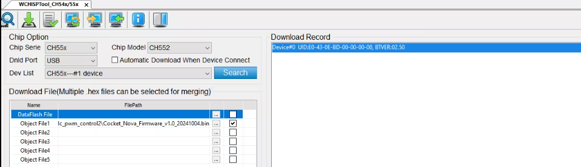
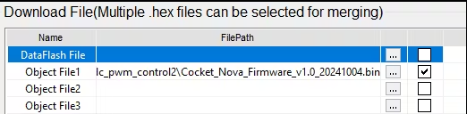
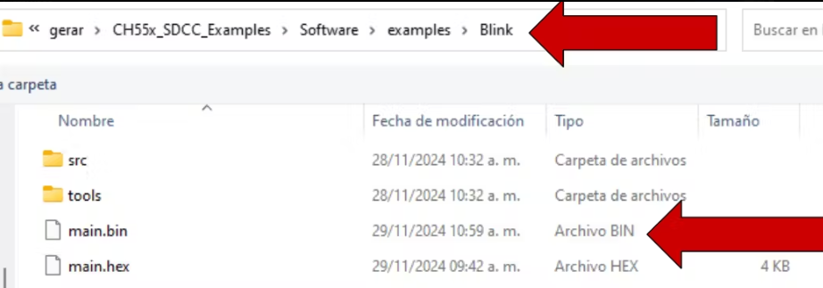
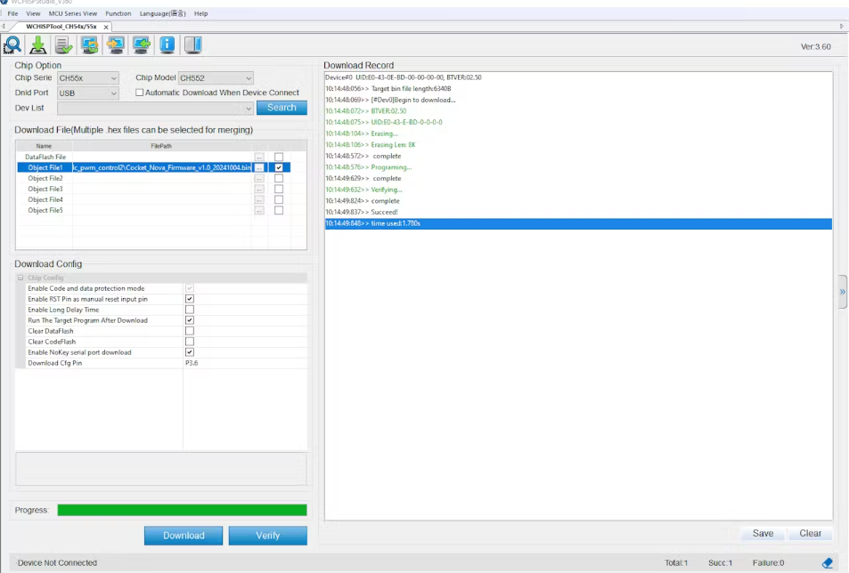
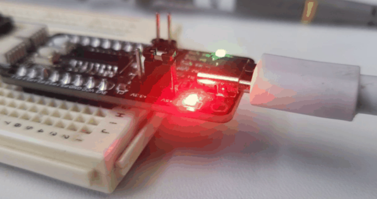
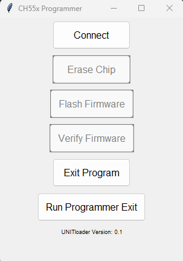

Grabar Firmware#
Cocket Nova CH552G Usando WCHISPTool (Windows OS)#
Este tutorial ofrece un método sencillo para actualizar el firmware en el Cocket Nova CH552G utilizando WCHISPTool. Este enfoque garantiza que tu placa esté operativa rápidamente, independientemente de si utilizas archivos .bin o .hex (generados usando el compilador SDCC).
Paso 1: Abre WCHISPTool e instala los controladores necesarios.#
Para garantizar que tu PC y el dispositivo se comuniquen correctamente, instala el driver USB CH372.
Inicia WCHISPTool: abre el programa en tu computadora.
Conecta tu dispositivo: coloca el CH552G en modo boot presionando el botón de boot mientras lo conectas a tu PC mediante USB.
Nota
WCHISPTool detectará automáticamente tu dispositivo y configurará los ajustes apropiados para el chip CH552G. No necesitas seleccionar el chip manualmente.
{kind=link}

Figura 8 OLED a Cocket Nova#
Paso 2: Carga el archivo de firmware#
Navega a la sección «Archivo de Descarga» en WCHISPTool.
{kind=link}

Figura 9 Ruta del firmware#
- Haz clic en el ícono de «Archivo Objeto» y localiza tu archivo de firmware.
Formatos soportados: .bin o .hex (generados usando el compilador SDCC).
Selecciona el archivo y asegúrate de que la casilla de «Archivo de Descarga» esté activada.
{kind=link}

Figura 10 Selección del firmware#
Paso 3: Graba el firmware#
Confirma que el dispositivo esté en Modo de Arranque.
Haz clic en el botón «Descargar» para iniciar el grabado del firmware.
Una barra de progreso indicará el estado. Espera a que el proceso se complete.
{kind=link}

Figura 11 Proceso de grabado#
Truco
Para un proceso más simplificado, la opción de Descarga Automática de WCHISPTool lo simplifica todo:
El programa detecta automáticamente el dispositivo conectado, carga el firmware y gestiona el proceso de grabado sin requerir intervención manual.
Con estos pasos, tu Cocket Nova CH552G se habrá grabado exitosamente y estará listo para el desarrollo.
Loadupch (GNU/Linux OS)#
Basado en el trabajado chprog la cual es una herramienta en Python para flashear fácilmente microcontroladores de la serie CH55x con versiones de bootloader 1.x y 2.x.x.
Campo |
Valor |
|---|---|
Proyecto |
chprog - Herramienta de Programación para Microcontroladores CH55x |
Versión |
v1.2 (2022) |
Créditos |
Stefan Wagner |
GitHub |
|
Licencia |
MIT License |
Referencias:
Inspirado y basado en chflasher y wchprog de Aaron Christophel y Julius Wang:
Una vez compilado el proyecto, debes flashear el programa en el dispositivo CH55x. Sigue estos pasos:
Conecta el Dispositivo
Asegúrate de que tu dispositivo CH55x esté conectado y que el botón BOOT esté presionado, tal como se indicó en el paso de compilación.
Flashea el Programa
Ejecuta el siguiente comando para flashear el programa compilado en el microcontrolador:
python ../../tools/chprog.py main.bin
{kind=link}

Figura 12 Efecto de parpadeo del LED#
Nota
Requiere que el controlador libusb-win32 esté instalado usando Zadig.
El Loadupch es un oriyecto de desarrollo de software diseñado para facilitar la carga de código al microcontrolador CH552 con interfaz grafica. Es una herramienta amigable que proporciona una interfaz gráfica, facilitando a los usuarios la tarea de subir su código. Basada en chprog, Loadupch es una herramienta en Python que simplifica el proceso de flasheo de microcontroladores de la serie CH55x con versiones de bootloader 1.x y 2.x.x.
Prudencia
Soporte disponible solo para GNU/Linux.
{kind=link}

Figura 13 Interfaz de la herramienta Loadupch#
Advertencia
La herramienta Loadupch se encuentra actualmente en desarrollo y puede contener errores. Utilízala bajo tu propio riesgo.
Para instalar la herramienta Loadupch, puedes usar pypi. Sigue estos pasos:
Instala Loadupch
Utiliza el siguiente comando para instalar la herramienta Loadupch mediante pip:
pip install loadupch
Ejecuta Loadupch
Después de la instalación, puedes ejecutar la herramienta Loadupch con el siguiente comando:
python -m loadupch
Prudencia
Requiere de asignación de permisos para acceder al dispositivo USB.
Esto lanzará la interfaz gráfica de la herramienta Loadupch, permitiéndote cargar código al microcontrolador CH552 de manera sencilla.
Truco
Si necesitas desinstalar la herramienta Loadupch por cualquier motivo, utiliza el siguiente comando:
pip uninstall loadupch
Nota
Requiere que el controlador libusb-win32 esté instalado usando Zadig.